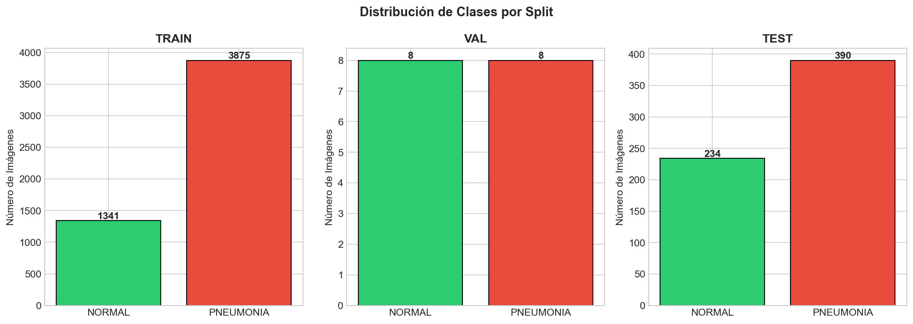
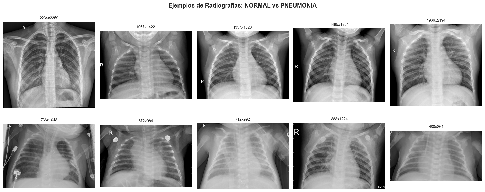
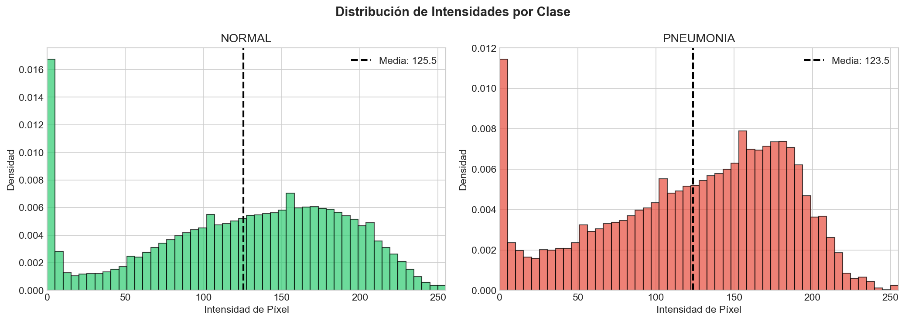
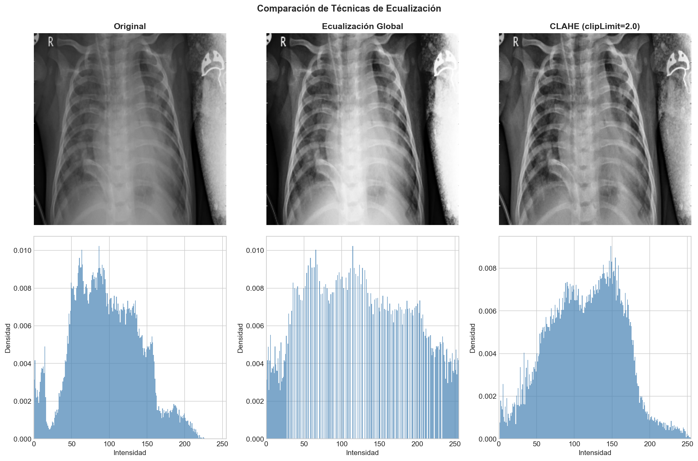
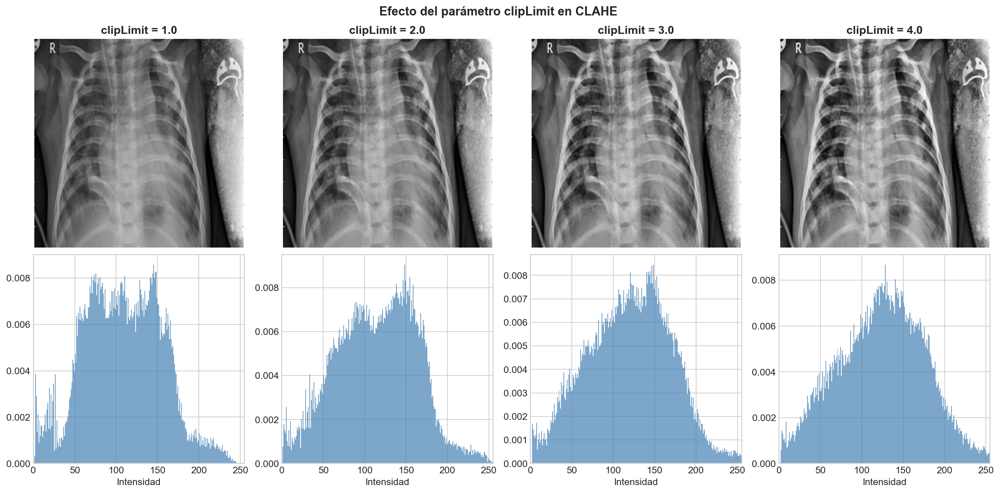
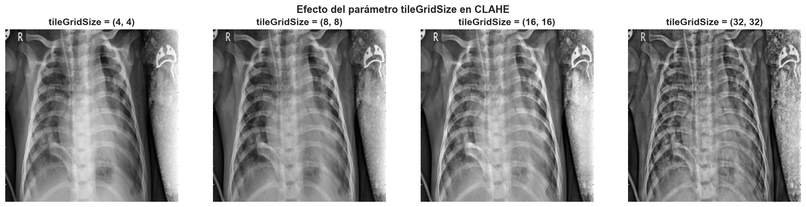
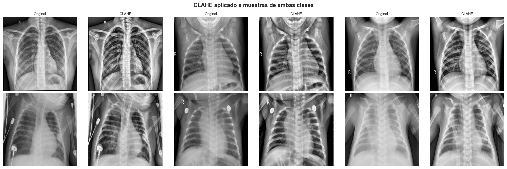
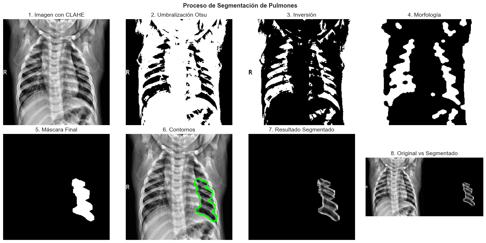
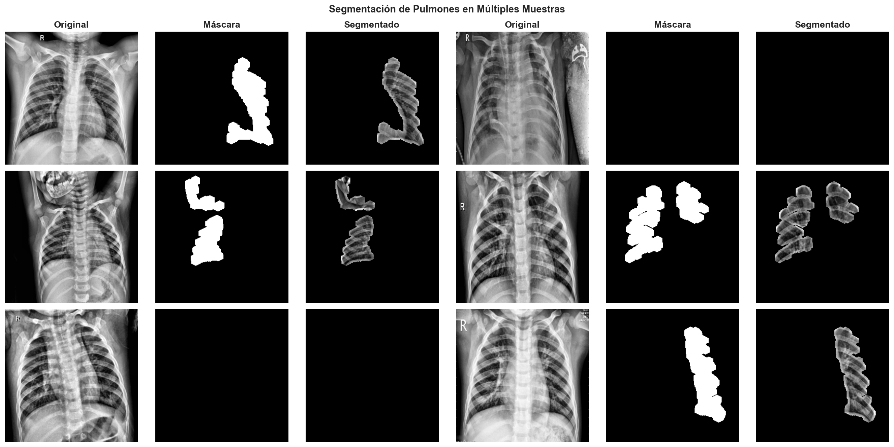
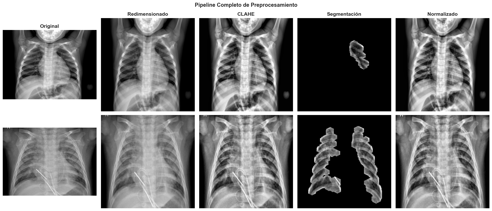

1. Introducción
1.1 Contexto del Problema
La neumonía es una infección respiratoria que inflama los alvéolos pulmonares, siendo una de las principales causas de mortalidad infantil a nivel mundial. El diagnóstico temprano y preciso es crucial para un tratamiento efectivo. Las radiografías de tórax son una herramienta diagnóstica fundamental, pero su interpretación requiere experiencia clínica y puede ser subjetiva.
El desarrollo de sistemas automatizados de clasificación mediante visión por computador puede asistir a los profesionales de la salud en el diagnóstico, reduciendo tiempos de análisis y mejorando la consistencia. Sin embargo, el éxito de estos sistemas depende críticamente de un preprocesamiento adecuado de las imágenes, que debe abordar desafíos como variaciones en dimensiones, contraste, y la necesidad de aislar regiones de interés.
1.2 Objetivos
Este trabajo presenta un análisis exploratorio exhaustivo y un pipeline de preprocesamiento para radiografías de tórax, con los siguientes objetivos:
- Análisis exploratorio: Caracterizar el dataset en términos de distribución de clases, dimensiones de imágenes, y propiedades de intensidad.
- Mejora de contraste: Implementar y evaluar técnicas de ecualización adaptativa (CLAHE) para mejorar la visibilidad de estructuras pulmonares.
- Segmentación de ROI: Desarrollar un algoritmo para aislar la región de los pulmones, eliminando artefactos y estructuras no relevantes.
- Pipeline integrado: Diseñar un sistema de preprocesamiento completo y reproducible que prepare las imágenes para etapas posteriores de extracción de características y clasificación.
Dataset Utilizado
Se utiliza el dataset Chest X-Ray Images (Pneumonia) de Kaggle, que contiene radiografías de tórax etiquetadas en dos clases: NORMAL y PNEUMONIA. El dataset está dividido en conjuntos de entrenamiento, validación y prueba, con un total de 5,856 imágenes.
2. Análisis Exploratorio de Datos
2.1 Distribución de Clases
El primer paso en cualquier proyecto de clasificación es entender la distribución de las clases. Un desbalance significativo puede afectar el rendimiento del modelo y requerir técnicas de balanceo.

Figura 1: Distribución de clases por split (train, validation, test). Se observa un desbalance significativo en el conjunto de entrenamiento con un ratio de aproximadamente 2.89:1 (Pneumonia:Normal).
| Split | NORMAL | PNEUMONIA | Total | Ratio (P:N) |
|---|---|---|---|---|
| Train | 1,341 | 3,875 | 5,216 | 2.89 |
| Validation | 8 | 8 | 16 | 1.00 |
| Test | 234 | 390 | 624 | 1.67 |
Observaciones sobre el Desbalance
Conjunto de entrenamiento: El ratio de 2.89:1 indica un desbalance moderado que puede
sesgar el modelo hacia la clase mayoritaria. Se recomienda considerar técnicas de balanceo como oversampling
(SMOTE), undersampling, o pesos de clase durante el entrenamiento.
Conjunto de validación: Con solo 16 imágenes, este conjunto es demasiado pequeño para
proporcionar evaluaciones confiables. Se recomienda redistribuir los datos o usar validación cruzada.
Conjunto de prueba: Presenta un desbalance menor (1.67:1), lo cual es más representativo
de un escenario real.
2.2 Visualización de Muestras
La inspección visual de muestras representativas permite entender las características visuales de cada clase y las variaciones presentes en el dataset.

Figura 2: Ejemplos de radiografías de ambas clases. La fila superior muestra casos NORMAL y la inferior casos PNEUMONIA. Se observan diferencias sutiles en la opacidad y textura del tejido pulmonar.
2.3 Análisis de Dimensiones
Las imágenes médicas típicamente presentan dimensiones variables dependiendo del equipo de captura y protocolos de adquisición. Es crucial normalizar las dimensiones para modelos de aprendizaje profundo que requieren entradas de tamaño fijo.
| Métrica | Altura (px) | Ancho (px) |
|---|---|---|
| Media | 1,086 ± 444 | 1,447 ± 413 |
| Rango | [127, 2,663] | [384, 2,720] |
Decisión de Normalización
Dada la alta variabilidad en dimensiones (desviación estándar de ~400 píxeles) y el rango amplio, se decide normalizar todas las imágenes a 224×224 píxeles, que es el tamaño estándar para modelos pre-entrenados como ResNet, VGG, y otros arquitecturas de CNN populares. Esta normalización se realiza mediante interpolación bilineal preservando la relación de aspecto cuando sea posible.
2.4 Análisis de Intensidades
Las radiografías son imágenes en escala de grises donde la intensidad de cada píxel representa la densidad del tejido. Un análisis de las distribuciones de intensidad puede revelar diferencias entre clases y guiar decisiones de preprocesamiento.

Figura 3: Distribuciones de intensidad de píxeles para ambas clases. Las distribuciones muestran diferencias sutiles, con casos de neumonía tendiendo a tener regiones más oscuras (mayor densidad) debido a la consolidación pulmonar.
3. Preprocesamiento de Imágenes
3.1 Ecualización Adaptativa de Histograma (CLAHE)
3.1.1 Fundamentos Teóricos
CLAHE (Contrast Limited Adaptive Histogram Equalization) es una técnica avanzada de mejora de contraste que supera las limitaciones de la ecualización global de histograma. A diferencia de la ecualización tradicional que procesa toda la imagen de manera uniforme, CLAHE divide la imagen en regiones (tiles) y aplica ecualización localmente, limitando la amplificación del contraste para evitar la amplificación excesiva de ruido.
| Característica | Ecualización Global | CLAHE |
|---|---|---|
| Procesamiento | Imagen completa | Por regiones (tiles) |
| Control de ruido | Amplifica excesivamente | Limitado por clipLimit |
| Detalles locales | Se pierden | Se preservan |
| Uso en radiografías | No recomendado | Recomendado |
3.1.2 Parámetros de CLAHE
CLAHE tiene dos parámetros principales que controlan su comportamiento:
- clipLimit: Limita la amplificación del contraste en cada tile. Valores típicos están entre 2.0 y 4.0. Valores bajos preservan más el contraste original pero pueden no mejorar suficientemente, mientras que valores altos pueden introducir artefactos.
- tileGridSize: Define el número de tiles en cada dimensión (por ejemplo, (8,8) divide la imagen en 64 regiones). Tiles más pequeños capturan mejor detalles locales pero pueden ser más sensibles al ruido.
3.1.3 Comparación de Técnicas
Se comparó la ecualización global con CLAHE para evaluar la mejora en la visualización de estructuras pulmonares.

Figura 4: Comparación entre imagen original, ecualización global y CLAHE. La ecualización global amplifica excesivamente el ruido en regiones oscuras, mientras que CLAHE mejora el contraste preservando la calidad de la imagen.
3.1.4 Análisis de Parámetros
Se realizó un análisis sistemático del efecto de los parámetros de CLAHE para determinar la configuración óptima.

Figura 5: Efecto del parámetro clipLimit en el resultado de CLAHE. Valores entre 2.0 y 3.0 ofrecen un buen balance entre mejora de contraste y control de ruido.

Figura 6: Efecto del parámetro tileGridSize. Un tamaño de (8,8) es el estándar para radiografías, proporcionando un buen balance entre detalle local y suavizado.
Configuración Óptima de CLAHE
Basado en el análisis experimental, se selecciona la siguiente configuración:
clipLimit = 2.0: Ofrece buen balance entre contraste y control de ruido.
tileGridSize = (8, 8): Estándar para radiografías, proporcionando ecualización local efectiva
sin introducir artefactos excesivos.
3.1.5 Aplicación a Múltiples Muestras
Se aplicó CLAHE a muestras representativas de ambas clases para validar la consistencia de la mejora.

Figura 7: Aplicación de CLAHE a múltiples muestras de ambas clases. Se observa una mejora consistente en la visibilidad de estructuras pulmonares y detalles finos en todos los casos.
3.2 Segmentación de Región de Interés (Pulmones)
3.2.1 Fundamentos
La segmentación de pulmones es un paso crucial en el preprocesamiento de radiografías de tórax. Al aislar la región de interés, eliminamos:
- Bordes de la imagen: Regiones negras o artefactos en los márgenes
- Texto y anotaciones: Marcas, fechas, y etiquetas añadidas por el equipo médico
- Estructuras óseas: Costillas y columna vertebral que pueden confundir al clasificador
- Tejido circundante: Regiones fuera del área pulmonar que no aportan información diagnóstica
3.2.2 Algoritmo de Segmentación
El algoritmo implementado sigue los siguientes pasos:
- Umbralización con Otsu: Binarización automática que separa regiones oscuras (pulmones) de regiones claras (huesos, fondo).
- Inversión: Los pulmones aparecen oscuros en radiografías, por lo que se invierte la imagen binaria para que los pulmones sean blancos.
- Operaciones morfológicas: Aplicación de apertura y cierre para eliminar ruido y conectar regiones desconectadas.
- Selección de componentes: Identificación de los dos componentes más grandes (pulmones izquierdo y derecho).
- Creación de máscara: Generación de una máscara binaria que define la región de interés.

Figura 8: Visualización paso a paso del proceso de segmentación de pulmones. Cada etapa del algoritmo se muestra para ilustrar cómo se aísla la región de interés.
3.2.3 Resultados de Segmentación
Se aplicó el algoritmo de segmentación a múltiples muestras de ambas clases para evaluar su robustez.

Figura 9: Resultados de segmentación aplicados a múltiples muestras. La máscara generada aísla efectivamente la región pulmonar, eliminando artefactos y estructuras no relevantes.
Segmentación como Paso Opcional
Aunque la segmentación mejora el enfoque en la región de interés, puede introducir errores en casos con anatomía atípica o imágenes de baja calidad. Por esta razón, se implementa como un paso opcional en el pipeline, permitiendo evaluar su impacto en el rendimiento del clasificador.
3.3 Pipeline Completo de Preprocesamiento
El pipeline completo integra todos los pasos de preprocesamiento en una secuencia ordenada y reproducible:
Pipeline de Preprocesamiento
1. Carga de Imagen
Lectura de la imagen en escala de grises desde el sistema de archivos.
2. Redimensionamiento
Normalización a 224×224 píxeles mediante interpolación bilineal.
3. Ecualización CLAHE
Aplicación de CLAHE con clipLimit=2.0 y tileGridSize=(8,8) para mejorar el contraste local.
4. Segmentación (Opcional)
Aislamiento de la región pulmonar mediante umbralización y operaciones morfológicas.
5. Normalización
Escalado de valores de píxeles al rango [0, 1] para estabilidad numérica en modelos de deep learning.

Figura 10: Visualización del pipeline completo aplicado a muestras de ambas clases. Cada columna muestra el resultado de un paso del preprocesamiento.
3.3.1 Configuración Recomendada
Basado en el análisis experimental, se recomienda la siguiente configuración del preprocesador:
XRayPreprocessor(
target_size=(224, 224),
apply_clahe=True,
clahe_clip_limit=2.0,
clahe_tile_grid=(8, 8),
segment_lungs=False, # Opcional: evaluar impacto
normalize=True
)| Parámetro | Valor | Justificación |
|---|---|---|
| target_size | (224, 224) | Tamaño estándar para modelos CNN pre-entrenados |
| apply_clahe | True | Mejora significativa del contraste sin amplificar ruido |
| clahe_clip_limit | 2.0 | Balance óptimo entre contraste y control de ruido |
| clahe_tile_grid | (8, 8) | Estándar para radiografías, buen balance detalle/suavizado |
| segment_lungs | False | Evaluar impacto en clasificación; puede mejorar o empeorar según el caso |
| normalize | True | Necesario para estabilidad numérica en modelos de deep learning |
4. Resultados y Métricas
4.1 Estadísticas del Dataset
El análisis exploratorio reveló las siguientes características del dataset:
| Característica | Valor |
|---|---|
| Total de imágenes | 5,856 |
| Clases | 2 (NORMAL, PNEUMONIA) |
| Dimensiones promedio | 1,086 × 1,447 px |
| Desviación estándar dimensiones | 444 × 413 px |
| Rango de dimensiones | [127-2,663] × [384-2,720] px |
| Ratio desbalance (train) | 2.89:1 (Pneumonia:Normal) |
4.2 Impacto del Preprocesamiento
El preprocesamiento implementado transforma las imágenes de manera que:
- Normalización dimensional: Todas las imágenes tienen dimensiones consistentes (224×224), permitiendo procesamiento en batch y uso de arquitecturas estándar.
- Mejora de contraste: CLAHE aumenta la visibilidad de estructuras pulmonares y detalles finos que pueden ser críticos para la clasificación.
- Enfoque en ROI: La segmentación opcional elimina ruido y artefactos, concentrando la información en la región relevante.
- Estabilidad numérica: La normalización a [0,1] asegura convergencia estable en algoritmos de optimización.
5. Análisis y Discusión
5.1 Desafíos Identificados
5.1.1 Desbalance de Clases
El desbalance significativo en el conjunto de entrenamiento (ratio 2.89:1) puede sesgar el modelo hacia la clase mayoritaria (PNEUMONIA). Para mitigar este problema, se recomienda:
- Pesos de clase: Asignar pesos inversamente proporcionales a la frecuencia de cada clase durante el entrenamiento.
- Oversampling: Técnicas como SMOTE o augmentación de datos para la clase minoritaria.
- Undersampling: Reducción selectiva de la clase mayoritaria, aunque esto reduce el tamaño del dataset.
- Métricas apropiadas: Usar F1-score, AUC-ROC, o precisión/recall balanceados en lugar de accuracy simple.
5.1.2 Conjunto de Validación Pequeño
El conjunto de validación con solo 16 imágenes es insuficiente para evaluaciones confiables. Se recomienda:
- Redistribución: Reasignar imágenes del conjunto de entrenamiento para crear un conjunto de validación más grande (típicamente 10-20% del total).
- Validación cruzada: Implementar k-fold cross-validation para evaluaciones más robustas.
5.1.3 Variabilidad en Dimensiones
La alta variabilidad en dimensiones (desviación estándar de ~400 píxeles) justifica la normalización. Sin embargo, el redimensionamiento puede introducir distorsiones. Consideraciones:
- Preservación de aspecto: Usar padding para mantener la relación de aspecto original cuando sea crítico.
- Interpolación: Evaluar diferentes métodos de interpolación (bilineal, bicúbica) para minimizar pérdida de información.
5.2 Decisiones de Diseño
5.2.1 Selección de CLAHE sobre Ecualización Global
CLAHE fue seleccionado sobre ecualización global porque:
- Preserva mejor los detalles locales en diferentes regiones de la imagen
- Controla la amplificación de ruido mediante clipLimit
- Es el estándar en procesamiento de imágenes médicas
- Produce resultados visualmente superiores en comparación directa
5.2.2 Segmentación como Paso Opcional
La segmentación se implementa como opcional porque:
- Puede fallar en casos con anatomía atípica o imágenes de baja calidad
- Su impacto en el rendimiento del clasificador debe evaluarse empíricamente
- Algunos modelos pueden beneficiarse de información contextual fuera de los pulmones
5.3 Limitaciones y Mejoras Futuras
5.3.1 Limitaciones Actuales
- Segmentación básica: El algoritmo actual puede fallar en casos complejos. Técnicas más avanzadas como U-Net o modelos de segmentación profunda podrían mejorar la robustez.
- Parámetros fijos: Los parámetros de CLAHE son fijos. Una adaptación automática basada en características de la imagen podría optimizar resultados.
- Sin corrección de artefactos: No se implementa corrección de artefactos comunes como marcas de placa o sombras.
5.3.2 Mejoras Propuestas
- Augmentación de datos: Implementar rotaciones, traslaciones, y variaciones de contraste para aumentar la robustez del modelo.
- Normalización avanzada: Considerar normalización por percentiles o técnicas específicas para imágenes médicas.
- Segmentación profunda: Entrenar un modelo de segmentación específico para el dataset.
- Análisis de calidad: Implementar detección automática de imágenes de baja calidad para filtrado o procesamiento especial.
6. Conclusiones
Este trabajo presenta un análisis exploratorio exhaustivo y un pipeline de preprocesamiento completo para radiografías de tórax. Las principales conclusiones son:
- Análisis exploratorio revelador: El dataset presenta un desbalance moderado (2.89:1) y alta variabilidad en dimensiones, justificando la necesidad de normalización y técnicas de balanceo.
- CLAHE efectivo: La ecualización adaptativa con parámetros clipLimit=2.0 y tileGridSize=(8,8) mejora significativamente el contraste y la visibilidad de estructuras pulmonares sin amplificar ruido.
- Segmentación funcional: El algoritmo de segmentación implementado aísla efectivamente la región pulmonar en la mayoría de los casos, aunque su impacto en la clasificación debe evaluarse empíricamente.
- Pipeline reproducible: El sistema de preprocesamiento diseñado es modular, configurable, y reproducible, facilitando experimentación y comparación de técnicas.
- Preparación para clasificación: El preprocesamiento prepara adecuadamente las imágenes para etapas posteriores de extracción de características y clasificación, con normalización dimensional y mejora de contraste.
El pipeline desarrollado proporciona una base sólida para la implementación de sistemas de clasificación automatizada de neumonía, con potencial para asistir a profesionales de la salud en el diagnóstico temprano y preciso de esta condición.
7. Referencias
- Pizer, S. M., et al. (1987). Adaptive histogram equalization and its variations. Computer Vision, Graphics, and Image Processing, 39(3), 355-368.
- Reza, A. M. (2004). Realization of the contrast limited adaptive histogram equalization (CLAHE) for real-time image enhancement. Journal of VLSI Signal Processing Systems for Signal, Image and Video Technology, 38(1), 35-44.
- Kermany, D. S., et al. (2018). Identifying medical diagnoses and treatable diseases by image-based deep learning. Cell, 172(5), 1122-1131.
- Otsu, N. (1979). A threshold selection method from gray-level histograms. IEEE Transactions on Systems, Man, and Cybernetics, 9(1), 62-66.
- He, K., et al. (2016). Deep residual learning for image recognition. Proceedings of the IEEE Conference on Computer Vision and Pattern Recognition (CVPR), 770-778.
- Simonyan, K., & Zisserman, A. (2014). Very deep convolutional networks for large-scale image recognition. arXiv preprint arXiv:1409.1556.
Repositorio del Proyecto
El código completo de este proyecto, incluyendo todos los scripts de análisis, visualización y notebooks interactivos, está disponible en GitHub. El repositorio incluye documentación detallada para reproducir todos los experimentos presentados en este reporte.
Repositorio: https://github.com/andresvie/pneumonia_classification